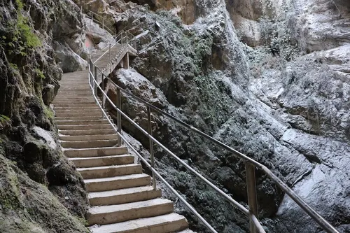
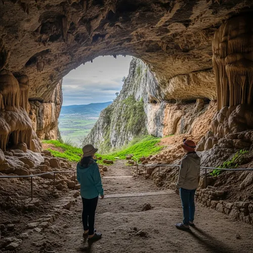

Gouffre de Friouato
Introduction
Un spectacle souterrain unique
Le Gouffre de Friouato est l'une des formations géologiques les plus impressionnantes du Maroc. Situé dans le parc national de Tazekka, cette merveille naturelle offre une expérience inoubliable aux aventuriers et aux amateurs de géologie.
Avec ses cavités profondes et ses formations rocheuses remarquables, Friouato raconte l'histoire géologique riche de la région de Taza. Les visiteurs peuvent explorer les passages souterrains et admirer les stalactites et stalagmites formées au fil des millénaires.
Galerie



Informations pratiques
Localisation
Parc National de Tazekka, région de Fès-Meknès
Accès
Route goudronnée jusqu'à l'entrée du parc, puis sentier balisé
Meilleure période
Avril à octobre pour des conditions climatiques optimales
Tarifs
Entrée gratuite au parc, guide local recommandé
Conseils pour les visiteurs
Portez des chaussures adaptées
Les sentiers peuvent être glissants. Des chaussures de randonnée robustes sont fortement recommandées.
Apportez une lampe de poche
La lumière naturelle est limitée à l'intérieur de la grotte. Une lampe frontale est utile.
La température reste fraîche
À l'intérieur de la grotte, la température est constante autour de 12°C. Apportez une veste.
Engagez un guide local
Un guide expérimenté enrichira votre expérience et garantira votre sécurité.